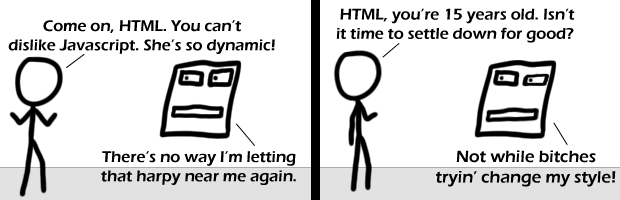

Comic JK 484
When I Feel Like It
⇤
<
?
>
⇥

⇤
<
?
>
⇥
Forum
.
RSS
.
Digg
.
Facebook
.
Reddit
.
Twitter
.
Stumbleupon
Enter your thoughts on number 484 here. Please, no spamming, trolling, or phreaking. Your mother uses an arcane blend of javascript and ActiveX. That alt-text... Eeeeew...... - Negative Twoth dfg Do not read mouseover text if squeamish Oh ActiveX. Might have worked if someone hadn't come up with something better. >Same could be said of feudalism >Or Communism in Russia... >> In Soviet Russia, HTML changes you! >>well played good sir Dynamic web technologies are the reason that browsers take up so much cpu and memory and run so poorly on phones and netbooks. We should trash all that stuff and switch to a type-safe, bytecode-based language without garbage collection. >Also, more <blink> tags! Who's with me? - Mojo Hand >>you think this is a democracy? your naïvety is cute... >>>Not if he's a billionaire programmer. Then he would not be cute, he would be sexy... >>2> Of course this is democracy! ...which is why we have a vast mass of retards ruining for the ones who know better... > Rather, it's everyone's shitty websites. If browsers didn't have to worry about poorly/improperly written HTML/js/css, the browsers would be WAY simpler. ~ LukeShu >> As long as browsers allow crappy code, crappy code will continue to be written. >>>Lynx FTW! >>> I've been tempted to make a W3C validation plugin/mod for browsers that displays huge error messages on pages that are invalid. Right now though, it's a little difficult to distinguish between CSS2 and CSS3... A site I'm working on is valid CSS3, but the validator detects it as invalid CSS2. ~ LukeShu PS: I suppose this makes me a hypocrite since the comicjk archive viewer (lukeshu.ath.cx/comicjk/viewer.php) uses invalid HTML. I'll fix this now. >Been years since I touched a web site, but shouldn't they identify what they use? That'd make the fail correct.